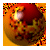

Click
me to see November's Neat Web Pages
Click
me to see November's Neat Web Pages
Online World is a print Internet magazine from the UK, and I edit the "Neat Web Pages" section of its Internet Guide - I also look after the Ftp sites section, but that doesn't work so well on the Web!
This is where you'll find the print pages carefully converted from Word into HTML, then lovingly hand-edited on a battered PowerBook, before finally being garnished with a scattering of inline images.
November 1994 was the first edition of Online World, and that month's "Neat Web Pages" took a look at the history of the Web, and a couple of ways to navigate it.
Click
me to see November's Neat Web Pages
Click me to see December's Neat Web
Pages
Click me to see January's Neat Web
Pages
There's more to Online World than Yellow Pages. I've written a couple of short essays on the future of the Net, and here they are...
Bye Bye TV Aerial There's a change coming: Gilder's Law and the Negroponte Switch.
Geeks In Space! Now that the accidental empires are cash rich dominions, where next for the billionaires of Silicon Valley?